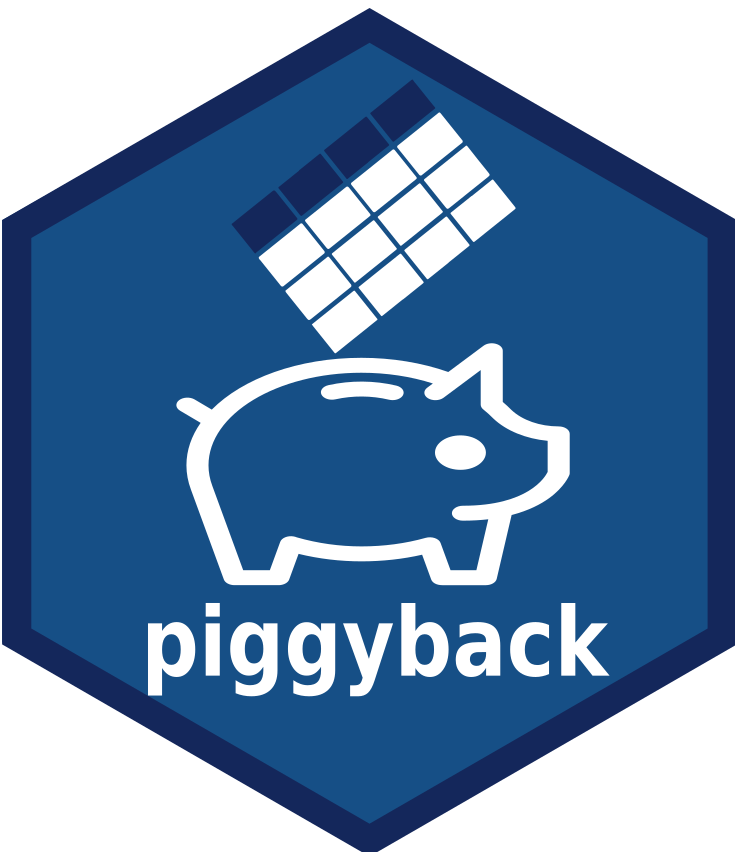

Changelog
Source:NEWS.md
piggyback (development version)
- Fix bug in
pb_releases()to allow for draft releases to appear [#105] -
pb_upload()no longer offers to create a release if interactive - it now provides the code to create the release in the error body. -
pb_download()now tries to uses browser download URLs (i.e.pb_download_url()) before trying API download URLs. This should reduce/eliminate effect of API rate limits for pb_download. [#109] -
"latest"release now aligns with GitHub’s “latest” release definition [#113] -
pb_download_url()now can return choice of “browser” or “api” download URLs [#116] - Add new functions
pb_read()andpb_write()as convenience wrappers around pattern of downloading totempfile()and then reading into memory. [#97]
piggyback 0.1.5
CRAN release: 2023-07-10
- Fix bug in
pb_upload()to correctly resolve"latest"tag - if there is no release tag actually named “latest” it will use the first release frompb_releases(). [#75] - Make
pb_download()andpb_info()also resolve"latest"similarly: if there is no release tag named “latest”, use first release frompb_releases() - Updated test coverage to use GHA
- Fixed error handling for
pb_list()for no release. -
pb_list()now respects the option"piggyback.verbose" - Fix download token handling [#88]
-
pb_upload()no longer prints out extra newlines [#93] -
pb_new_release()now warns and exits early instead of failing if a release already exists. [#95] - Fixup test issues [#100]
-
pb_uploadadds a two-second sleep after user creates release [#101]- This is because it takes a few seconds for the GitHub API to register that the new release has been created
- Adds
piggyback.cacheR option to avoid memoising altogether - Adds
.pb_cache_clear()function to empty the cache more consistently (internally and externally)
piggyback 0.1.4
CRAN release: 2022-07-19
- The progress bar argument
show_progressinpb_upload()andpb_download()now defaults tointeractive()[#72] - Fix bug in
pb_download()for downloading without agh::gh_token()(mostly on Windows?) [#77] - Fix bug introduced by above bugfix - missed Authorization in header
-
guess_repo()now usesgh::gh_tree_remote()rather than gert - this eliminates the gert dependency. [#80] -
pb_release_delete()introduced to delete existing releases. [#81] -
pb_new_release()renamed topb_release_create()to sync with the new delete function. - Fix offer to create new release in
pb_upload()- also switch to usingrlang::is_interactive()to maybe one day test this. - Tests rewritten to primarily use GHA and write to/from the ropensci/piggyback repo.
- Added
httr::RETRY()behaviour topb_download().
piggyback 0.1.3
CRAN release: 2022-05-19
- fix bug in
pb_upload()for uploading to a release with no assets [#67] - avoid implicit dependency on
tibble[#70]
piggyback 0.1.2
CRAN release: 2022-04-26
- update intro vignette to remove all mentions of
pb_track(),pb_push(), andpb_pull()which were removed as of version 0.0.0.9900 -
pb_upload()now handles thedirargument to control relative path directories. - update intro vignette to remove mention of path name handling and instead provide examples of how path names are handled.
- update intro vignette instructions for git authentication
-
pb_new_release()now reports HTTP errors when attempting to create a new release and returns the contents of the error if it fails. -
pb_releases()created - it returns a list of releases available in the repository. - Internal function
pb_info()refactored to search for the specified tag(s) which should improve performance. Should handle multiple tags gracefully. - Internal function
pb_info()(and thereforepb_list(),pb_download(),pb_download_url()) no longer ask about creating new releases if the release is not found. -
pb_upload()is now the only function that offers (interactively) to create a new release if release is not found. If noninteractive, user must runpb_new_release()manually prior to uploading. - CLI messaging now consistently uses cli package and no longer uses clisymbols or crayon - this is to align with the imports from the gh package.
- Documentation updated.
- Add options(“piggyback.verbose”) TRUE/FALSE to control verbosity/messaging levels.
piggyback 0.1.1
CRAN release: 2021-09-09
- switch to gh::gh_token() for token management. Still supports the same env var approach, but also compatible with
gitcredsand other use. - resolve issue in
pb_upload()when creating a new tag in the process, previously data would be attached to the previouslylatesttag instead of the newly created one. - resolve issue in
pb_download()where httr would report a 401 status even after data successfully downloads.
piggyback 0.1.0
CRAN release: 2021-08-06
- address remaining authentication issue in changes to GitHub API (on pb_upload()) [#47]
- Use flat file structure on upload/download instead of encoding path [#48]
- improve performance via more aggressive memoising of
pb_info()calls, inceasing defaultpiggyback_cache_durationto 10 minutes [#46] - Resolve bug introduced by API changes that would stop creation of tags on repos with default branch called
mainor without previous releases [#48]
piggyback 0.0.12
- address issues in authentication due to changes in GitHub API (#37)
piggyback 0.0.11 2020-02-25
CRAN release: 2020-02-25
-
guess_repo()now infers a remote when there are multiple associated with the repo. The “upstream” (preferred) or “origin” repo is selected if either exists, otherwise the function errors and asks the user to explicitly specify a repo (#31). -
release_info()now works properly when there are no existing releases, which enables the usage ofpb_new_release()on repos without a release (#29). - Fix error on
pb_info()under certain cases which resulted inError in a[[1]] : subscript out of bounds, (#36) - Fix CRAN unit-test on deleting file
piggyback 0.0.10 2018-02-06
CRAN release: 2019-02-07
- Improve interface regarding
overwritebehavior inpb_upload()(#25) - Bugfixes for errors introduced in 0.0.9:
- Access all assets on a release instead of first 30. This could break upload and download. (#23, #24)
- Uploading of directory paths could cause download errors in
pb_download(). (#24, #26)
piggyback 0.0.9, 2019-01-08
CRAN release: 2019-01-08
- Enable re-upload and deletion of partially uploaded files (#19)
piggyback 0.0.8, 2018-10-06
CRAN release: 2018-10-06
- Updates to documentation, streamlining tests
- remove dependency on
utils::askYesNowhich is only available in R >= 3.5.0